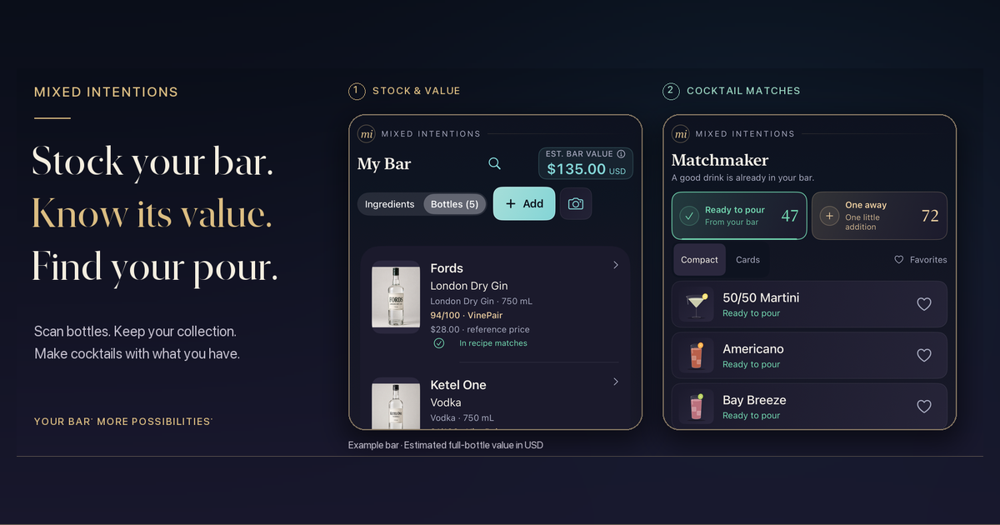

Your home bar, with more possibilities
Stock your bar.
Find your next pour.
Turn the ingredients and bottles you already own into cocktails you can make. Keep your collection organized, see its estimated value, and make each recipe your own.

Take stock
Add ingredients, photograph bottle labels, review the match, and keep brands and expressions together in your bar.
See the possibilities
Find cocktails ready to make and recipes just one ingredient away. Keep favorites close.
Make it yours
Create recipes and refine House Pours from a cocktail, spirit or ingredient. Save your versions locally.
Know what is on your shelf.
An estimated bar value brings your saved bottles into view. Prices retain their source and bottle size; bottles without a usable price are left out of the total.
Features vary by version. Value is a dated full-bottle estimate in USD, not a measurement of remaining liquid or a live local quote. Images show example inventory.
Your recipes stay with you.
Your bar, favorites and saved recipes live on your device and are designed to survive normal updates. Choose when to search online or share a recipe.